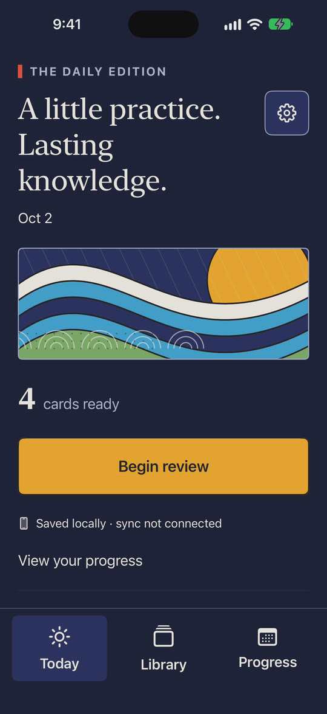
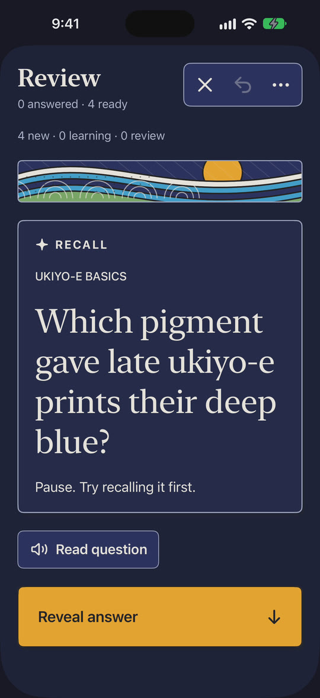
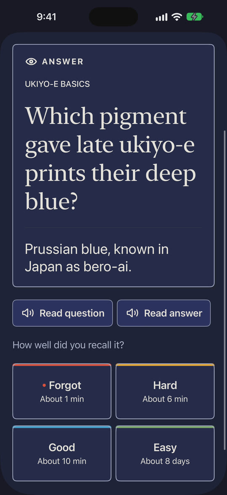
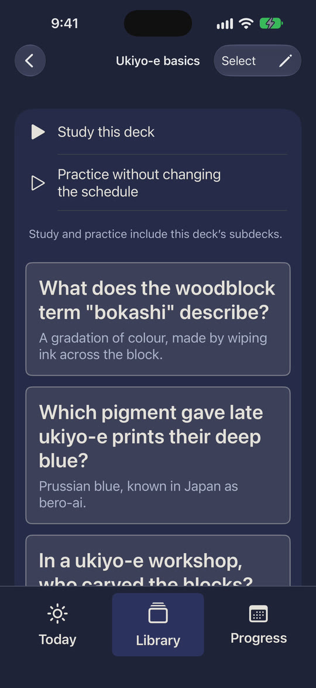
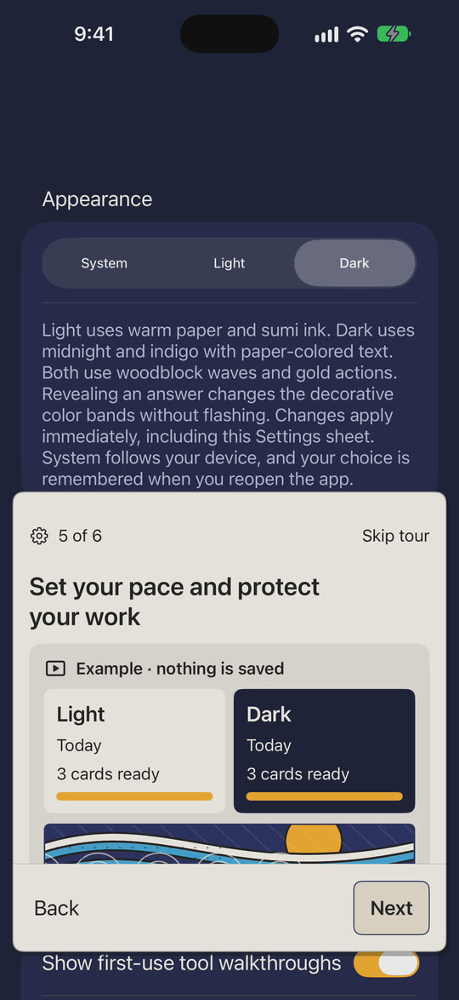

Recall first
Each card asks you to try before you reveal. Rate Forgot, Hard, Good or Easy, with the next interval shown on every button. Undo is one tap away.
~/adhd/brain-kata $ ./review --today
Repeat. Refine. Remember.
A native spaced-repetition flashcard app for iPhone and iPad. Recall first, reveal, rate, and come back when it counts.
iphoneipadswiftuifsrs-6
in development · not on the App Store yet
Write a question. When it comes up, try to recall the answer before you reveal it, then say how it went. The FSRS-6 scheduler decides when you'll see that card again, so your practice goes where it's needed and nowhere else.
The interface is printed in a woodblock-festival style: paper surfaces, ink outlines and rolling waves, in light and dark.
Each card asks you to try before you reveal. Rate Forgot, Hard, Good or Easy, with the next interval shown on every button. Undo is one tap away.
Reviews are scheduled by the FSRS-6 algorithm with a 90% retention target, and every review is kept in your history.
Basic, reversed and fill-in-the-blank cards, with images, audio, image masks and offline math equations.
Nest decks, search questions, answers and tags, and combine filters into saved views.
Import existing decks and CSV files, or draft cards from text, PDFs and photos. Nothing is saved until you approve each card.
Read questions and answers aloud, work it out on a scratchpad, or record your voice to compare with a reference.
A 30-day practice calendar, a daily goal and optional reminders.
Create and study without an account. Cards are saved on the device, with verified backups and snapshots you can restore.





In development. Brain Kata isn't on the App Store yet, and sync between devices isn't connected yet.
The clips and screenshots on this page are the current build, recorded live in the iPhone simulator with a small sample deck.